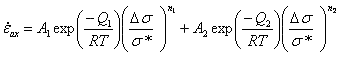

Secondary creep is a direct relation between the shear strain rate and the differential stresses, as experienced in many materials (metals and rocks) at elevated temperatures, and in salt also at moderate temperatures (above 10 C). It may be preceded by strain hardening (primary) creep -not available in Geomec at this moment.
Most
creep laws (both theoretical and lab-fitted) are written as a power-law relation
between the axial creep rate (
 ax
=
ax
=  1)
on the triaxial differential stress (
Ds =
s1 - s3
= sax - srad
), with an additional Arrhenius-type relation to the ambient temperature T.
1)
on the triaxial differential stress (
Ds =
s1 - s3
= sax - srad
), with an additional Arrhenius-type relation to the ambient temperature T.
Within Diana/Geomec it is possible to input two simultaneously acting creep mechanisms, both contributing to creep strain. The secondary creep law observed in constant-strain-rate triaxial tests can be written in the form:

[Equation 1.1]
where:
|
|
is the vertical strain rate in [1/s] |
| is the differential stress in [Pa] | |
| A1 and A2 | are creep strain rate coefficients in [1/s] |
| Q1 and Q2 | are activation energies in [J/mol] |
| n1 and n2 | are creep powers [-] |
| R | is the gas constant (8.314 J/ºK /mol) |
| T | is the ambient temperature [K] |
| s* | is a unifying reference stress (usually kept at 1 MPa) |
The user defined input parameters in Geomec are:
A1 and A2
Creep strain rate coefficients [1/s] for mechanism 1 and mechanism 2.
If only a single creep mechanism is active or known, A2 should be kept zero.
Q1/R and Q2/R
Activation temperatures in [K] for mechanism 1 and mechanism 2. The value is determined by dividing the activation energies (in J/mole) by the gas constant R ( = 8.314 J/K /mole). If the temperature dependence is not known (only tests results at in situ temperatures), Q1/R and/or Q2/R may be set at zero (0), where A1 and A2 should be chosen to represent the creep rate at a differential stress of 1 MPa (or reference field unit).
n1 and n2
Stress powers for mechanism 1 and mechanism 2.
n may vary from 0.5 (thixotropy) to 80 (plasticity without strain hardening), but for creep usually varies from 1 (Newtonian creep) to 5.
s*
Unifying reference stress (usually kept at 1 MPa or field unit)
Note that creeps strains can be calculated when applying time-steps only ! Load steps are seen as instantaneous, which implies the absence of creep strain !
Creep parameters:
Creep parameters are usually derived from laboratory test results, performed under stresses and temperature, where the relevant creep mechanism is believed to be dominating the creep rate.
The parameter n is best derived from strain rate stepping tests on a single sample, varying the enforced strain rate by for instance an order of magnitude and keeping the strain rate constant for a few percents of strain to be sure to reach non-strain hardening or softening creep rates.

[Equation 1.2]
The temperature dependence can be determined by performing constant stress or constant strain rate tests at different temperatures:
 or
or

[Equation 1.3]
3D-creep formulae
The implemented 3-D version of the creep law first scalars the stress-strain rate relation by determining (shear) stress and strain rate equivalents.
Diana/ Geomec calculates (non directional) Von Mises equivalents (eq) of the creep strain rate and then distributes the creep components according to the apparent stress tensor. For tri-axial stress situations (q=sax-srad) the resulting outcome is identical.

[Equation 1.4]

[Equation 1.5]
The non dimensional creep law implemented in DIANA writes:

[Equation 1.6]
This equation reduces for triaxial loading (q=sax-srad=Ds) and the presently implemented fixed volume creep (evc =0; eqc = e1c ) to Equation 1.1.
The general calculation scheme is Regular Newton-Raphson for salt combined with a Direct solver, in which salt creep is incorporated in the full model stiffness matrix, using the scheme below:
1. Calculate the creep strains, assuming the stresses do not change over the time step.
2. Calculate the effects of stress changes during the time step. This implies a linearization to Ds at the present stress situation s. For each element (stress point) and each time step, this will lead to a different matrix !
3. Combine the stress-strain relations of the various material (elastic, plastic, creep)
4. Calculate the new stress field, resulting from the linearised approach
5. Calculate the non-linear creep contribution from the new stress field and add this to the initial creep (force unbalance)
6. Compare unbalance with external stress field (convergence criteria)
7. Iterate if required steps 4-6 to obtain an improved stress field and improved non-linear creep contribution.
It is possible to recalculate the stiffness matrix every iteration, to allow linearization at the new (instead of the old) stress estimation, in theory rendering a convergence with less steps (Iterative solver). However this takes more calculation time per step, normally not speeding up the calculations in total.
After calculating the equivalent (Von Mises) stresses and strains (Eq 1.4-1.6), the creep strains are (for non-dilatant non-contracting creep, the only present possibility in Diana/ Geomec) redistributed to the strain tensor according to:

[Equation 1.7]
Pc =

[Equation 1.8]
Within Geomec, the salt creep model of Equation 1.6 is linearised to s and q, i.e. the creep is dependent on the (in the previous time or load step calculated) stress state st and the stress change over the time step Dt: Ds.

[Equation 1.9]
To improve on linearization errors, a correction term Dec,nl is introduced, which can be calculated after the first iteration, when first estimates for the new stresses at t+Dt are known. With multiple iterations, multiple updates of Dec,nl are calculated, which normally converge, unless the stress changes during the time step are too big (especially for non-linear creep, i.e. n ¹ 1)
The linearised creep stiffness Cc (per creep mechanism) can be calculated to be:

[Equation 1.10]
with I the 6x6 indentity matrix.
The elasto-visco-plastic apparent stiffness matrix becomes:

[Equation 1.11]
where Ce is the elastic compliance matrix, Cc,1 Cc,2 are the matrices from the 2 defined creep mechanisms and Cp is any stiffness related to other non-elastic processes (presently not possible in salt).
For linear creep (n=1) the corrections are absent, by which this creep mode is very stable. For higher n values stress changes, in combination with (too) high time steps give rise to large corrections on the creep strain. This causes multiple iterations and can even lead to non-convergence of the calculations.
The remedial is always to limit the duration of the time steps, especially where the (shear) stresses can be expected to vary considerably during the time step, for instance after instantaneous (elastic) loading of the model.